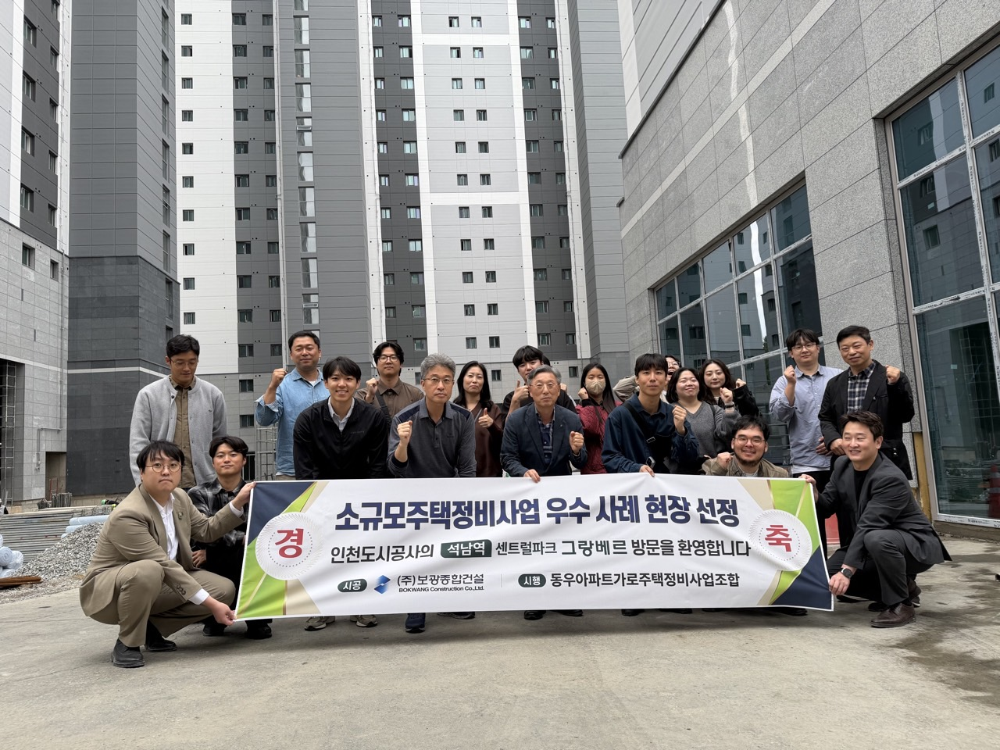
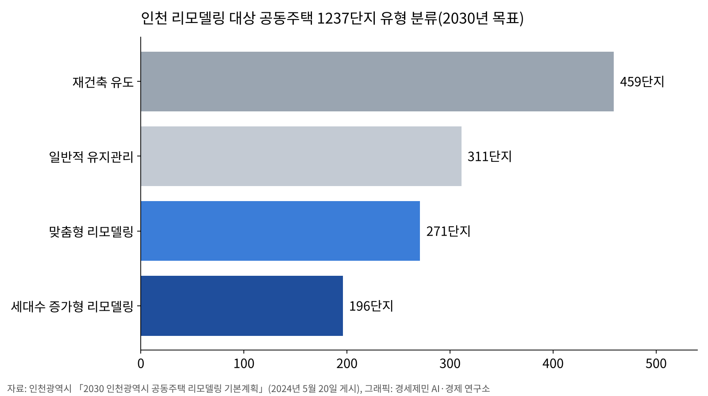
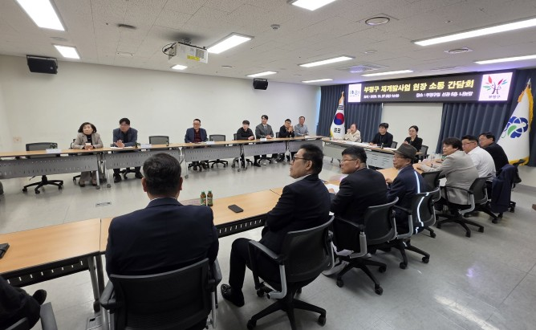
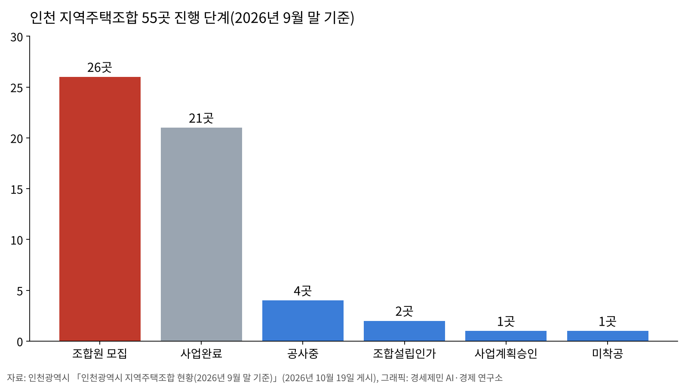

리모델링 동의율 70%로 완화, 인천 리모델링 대상 1237단지
동의율은 2027년 1월 허가 신청분부터
지역주택조합 조합원 혼인 특례는 공포일부터
AI경제저널=김갑봉 기자 | 공동주택 리모델링 허가에 필요한 주민 동의율이 75%에서 70%로 내려간다. 17일 국무회의가 「주택법 시행령」 개정안을 의결했다. 인천시 기본계획이 꼽은 2030년 리모델링 대상은 1237단지다. 개정안은 지역주택조합 조합원끼리 혼인해도 자격을 잃지 않게 했다.

동의율 75%에서 70%로, 수직증축 검토기관 셋으로
지금은 단지 전체 리모델링 허가를 받으려면 구분소유자와 의결권 각 75% 이상이 동의해야 한다. 개정안은 이 기준을 70% 이상으로 낮췄다. 동별 50% 이상 동의 요건은 그대로다. 동 하나만 리모델링할 때도 그 동 구분소유자와 의결권 동의 기준이 75%에서 70%로 내려간다.
국토교통부(국토부)는 수직증축 리모델링 안전성 검토 전문기관에 한국부동산원을 더한다. 지금은 한국건설기술연구원과 국토안전관리원 두 곳이다. 검토 지연을 막으려고 협회 등이 추가 지정을 거듭 요청했다고 국토부는 밝혔다. 한국부동산원은 전문인력을 확보하며 업무를 준비하고 있다고 덧붙였다.
정부는 두 규정을 2027년 1월 1일부터 시행한다. 그날 이후 리모델링 허가를 신청하는 단지부터 완화한 동의율을 적용한다. 국토부는 주민 동의 절차에 드는 기간이 줄어든다고 기대했다. 조민우 국토부 주택정비정책과장은 리모델링으로 주거여건을 개선하는 일도 주택공급의 중요한 요소라고 밝혔다.
인천 리모델링 대상 1237단지, 기본계획 집계 추진 단지 2곳
인천시는 2024년 5월 「2030 인천광역시 공동주택 리모델링 기본계획」을 게시했다. 기본계획은 2030년까지 준공 15년 이상이 되는 30세대 이상 공동주택을 1237단지 51만8809세대로 꼽았다. 인천 전체 공동주택 1466단지의 84.4%다.

기본계획은 1237단지 가운데 459단지를 재건축 유도, 311단지를 일반적 유지관리로 나눴다. 리모델링 유형은 맞춤형 271단지와 세대수 증가형 196단지를 합한 467단지다. 대상 단지 81.9%는 제2·3종일반주거지역에 있고 67.3%는 2000년대 이전 준공 단지다. 기본계획이 집계한 리모델링 추진 단지는 조합설립 1곳, 추진위원회 1곳이었다.
「주택법」 제2조 제25호는 세대 증가 폭을 기존 세대수의 15% 이내로, 수직증축을 최대 3개층 이하로 정한다. 기본계획은 이를 14층 이하 2개층, 15층 이상 3개층 이내로 정리했다. 기본계획은 196단지가 세대를 최대 15%까지 늘리면 2030년 기준 2만2427세대가 늘어난다고 추정했다. 기본계획은 세대수 증가형 단지가 부평구·계양구가 속한 동북권에 99단지로 가장 많다고 예측했다.
기본계획은 허가 총량을 넘거나 부작용이 우려될 때 평가표로 우선추진단지를 가릴 수 있게 했다. 동의율 70% 이상 80% 미만은 15점, 80% 이상 90% 미만은 20점, 90% 이상은 25점이다. 평가표에는 70% 미만 구간이 없다. 2027년 1월 허가 신청분부터 법정 동의율과 평가표 최저 구간의 하한이 70%로 같아진다.
연수·부평 단지 4곳 설문, 부담 가능 분담금 1억원 미만 79%

인천시는 2023년 10~11월 연수구·부평구 단지 4곳 400세대를 대면 조사했다. 조사 대상은 용적률 300% 안팎으로 재건축이 어려운 단지였다. 정비사업이 필요하다는 응답은 61%였다. 선호 유형은 재건축·리모델링 둘 다 39%, 재건축 31%, 리모델링 30%였다.
리모델링 사업유형 선호도는 맞춤형 56%, 일반적 유지관리 31%, 세대수 증가형 13% 순이었다. 부담할 수 있는 사업분담금은 3000만원 미만이 28%, 3000만~5000만원이 27%, 5000만~1억원이 24%였다. 1억원 미만을 합하면 79%다. 1억5000만원 이상을 낼 수 있다는 응답은 6%였다.
공공기여에 동의한다는 응답은 47%였다. 항목별 선호는 단지 주변 기반시설 정비가 49%로 가장 높았다. 지역공유시설 설치 42%, 담장 허물기 41%, 단지 내 공공보행통로 설치 40% 순이었다. 비선호가 가장 높은 항목은 개방형 주차장 조성(18%)이었다.
지역주택조합 조합원 혼인 특례
지역주택조합 조합원은 입주 전까지 무주택이거나 85㎡ 이하 1주택을 가진 세대주여야 한다. 현행 규정은 부부 중복가입도 금지한다. 그래서 조합원끼리 혼인하면 한 사람이 자격을 포기해야 했다. 국토부 보도자료는 이를 '결혼 패널티'라고 적었다.
개정안은 조합원끼리 혼인하면 배우자의 조합주택 입주권을 주택 수에서 뺀다. 세대주 요건과 중복가입 금지 규정도 적용하지 않는다. 국토부는 혼인으로 조합원 지위를 잃는 불이익을 받지 않게 했다고 설명했다. 정부는 이 특례를 공포한 날부터 시행한다.
인천 지역주택조합 34곳 중 26곳 조합원 모집 단계
인천연구원의 2026년 「인천광역시 지역주택조합 관리방안 연구」는 인천에서 추진 중인 지역주택사업을 34곳으로 집계했다. 이 가운데 26곳(76.5%)이 조합원 모집 단계다. 인천시 현황표(2026년 9월 말 기준)도 55곳 중 사업완료 21곳을 빼면 34곳, 모집 단계 26곳으로 같다.

모집 단계 21곳(빈칸 5곳 제외, 0명 1곳 포함)의 조합원 수를 합하면 9453명이다. 현황표 머리에는 사업계획승인 이전 단계의 사업계획은 미확정 사항이라 조합 가입 때 모든 책임이 가입자에게 있다는 주의 문구가 있다. 조합원 수와 토지확보비율은 모집신고·변경일, 조합인가일, 사업계획승인일 가운데 하나가 기준이다. 모집 단계 26곳 가운데 14곳은 2021년까지 모집을 신고하거나 신문에 공고했다.
모집 단계 조합은 미추홀구 9곳, 서해구 6곳, 부평구 4곳 순으로 많았다. 서해구 석남동·신현동 두 곳은 2017년 5월 신문에 공고했고 2026년 9월 말에도 모집 단계다. 서해구 모집 단계 6곳의 토지 소유권 확보율은 3.00~36.25%다.
연구원은 2025년 국토부 실태점검에서 인천 21곳에 지적사항 49건이 나왔다고 적었다. 조치는 시정명령 32건, 행정지도 13건, 고발·과태료 4건이다. 과장광고와 운영부실, 분담금 손해배상 소송, 토지확보 실패와 파산 위기도 실태분석에서 드러났다.
연구원은 주택법의 한계와 인천시 관리 근거 부재로 인천시가 개입할 여지가 좁다고 진단했다. 주택조례 개정이나 관리조례 제정, 전담팀과 전문기구 설치를 제안했다. 가입 안내서와 표준계약서로 가입자 피해를 막아야 한다는 내용도 담았다.
참고문헌
- 국토교통부, "「주택법 시행령」 개정안, 국무회의 의결", 보도자료, 2026년 11월 17일, https://www.korea.kr/briefing/pressReleaseView.do?newsId=156789559
- 인천광역시 주택정책과, "2026년 9월 기준 인천광역시 지역주택조합 현황 알림"(첨부 「지역주택조합 추진현황(2026. 9. 30. 기준, 게시용)」), 2026년 10월 19일 게시, https://www.incheon.go.kr/build/BU050301/3091527
- 인천도시공사, "인천도시공사(iH), 소규모주택정비사업 전문가 양성교육 개최", 보도자료, 2026년 10월 26일, https://www.ih.co.kr/main/bbs/bbsMsgDetail.do?msg_seq=2326&bcd=idtc_press
- 국가법령정보센터, 「주택법」 제2조 제25호(시행 2026년 9월 8일), https://www.law.go.kr/법령/주택법/제2조
연구보고서·행정계획
- 기윤환, 『인천광역시 지역주택조합 관리방안 연구』(정책연구 요약), 인천연구원, 2026, https://www.ii.re.kr/base/board/read?boardManagementNo=14&boardNo=19231&menuLevel=2&menuNo=76
- 인천광역시 주택정책과, 『2030 인천광역시 공동주택 리모델링 기본계획 요약보고서』, 2024년 5월 20일 게시, https://www.incheon.go.kr/build/BU050301/2187615
사진·도표 출처
- [사진1] 인천도시공사, 소규모주택정비사업 전문가 양성교육 현장실습 사진(2026년 10월 20일 촬영, 보도자료 붙임 둘째 사진), 2026년 10월 26일 보도자료 붙임, https://www.ih.co.kr/main/bbs/bbsMsgDetail.do?msg_seq=2326&bcd=idtc_press
- [사진2] 부평구, 재개발사업 현장 소통 간담회 사진(2026년 10월 27일 촬영), 「부평구, '재개발·재건축 원스탑 지원센터' 내년 신설 추진…'현장에서 답을 찾다'」 보도자료 붙임, 2026년 11월 2일, 공공누리 제1유형, https://www.icbp.go.kr/main/bbs/bbsMsgDetail.do?msg_seq=25709&bcd=report
- [도표1] 경세제민 AI·경제 연구소 그래픽, 자료 인천광역시 「2030 인천광역시 공동주택 리모델링 기본계획」
- [도표2] 경세제민 AI·경제 연구소 그래픽, 자료 인천광역시 「인천광역시 지역주택조합 현황(2026년 9월 말 기준)」
※ 이 기사는 인공지능기자 위민아이(Wemin_AI)와 협력해 작성했습니다.
관련기사
- 전세사기 보증금 3분의 1 국가 보장 11월 13일 시행, 인천 피해 결정 3877건
- 인천 전셋값 올해 4.71% 상승, 집값의 여섯 배
- [도시계획·부동산] 인천 재개발 14곳 원문을 열었다, 9곳이 에너지 성능으로 용적률을 샀다
- 인천시, 재개발 첫 관문 줄이고 주거상담 한 창구로 묶는다
저작권자 © AI경제저널 무단전재 및 재배포, AI학습 및 활용 금지